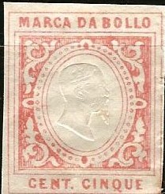
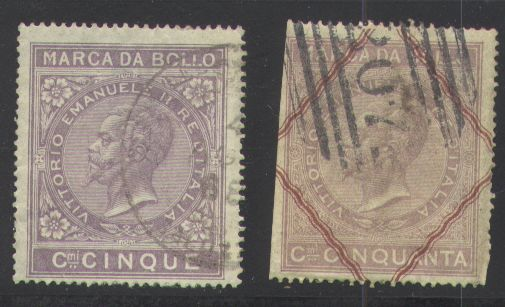
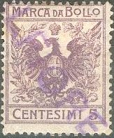
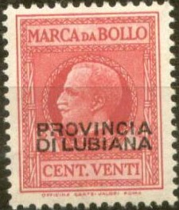
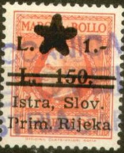
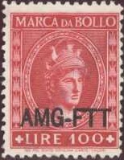
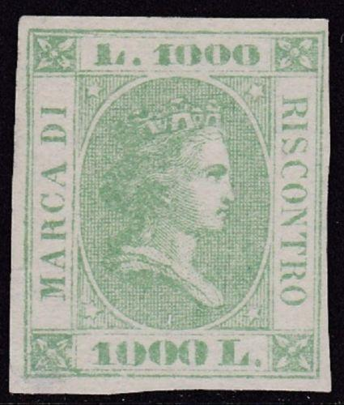
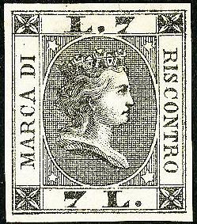
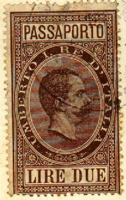
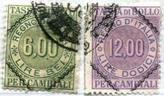

Return To Catalogue - Italy fiscal stamps, part 1 - Italy fiscal stamps, part 3 - Italy overview
Note: on my website many of the
pictures can not be seen! They are of course present in the
catalogue;
contact me if you want to purchase the catalogue.
Many fiscal stamps of Italy exist, most of them have the inscription 'marca da bollo', 'tassa di bollo' or 'riscontro', they often resemble postage stamps. If anybody posesses pictures of fiscal stamps of which I do not posess a picture yet, please contact me!

The following values exist: 5 c, 50 c, 1 L, 1 L 20, 2 L and 4 L (all in the colour red).



The following values exist: 5 c, 10 c, 50 c, 1 L, 1 L 20, 2 L and 4 L (all in the colour lilac). A proof of the value 3 L seems to exist. Furthermore the following surchared stamps were issued in 1866: 10 c on 5 c, 10 c on 1 L 20 and 3 L on 4 L (two types). In 1871 some red wavy lines were applied to the values: 50 c, 1 L, 2 L, 3 L and 4 L. A postal forgery of the 1 L (with wavy lines) seems to exist (I have never seen it).
15 c, 25 c, 50 c, 1 L, 1.50 L, 2 L, 2.50 L, 3 L, 3.50 L, 4 L, 4.50 L, 5 L, 10 L and 15 L (all in the colour lilac).
The following values exist: 15 c, 25 c, 50 c, 1 L, 1 L 50, 2 L, 2 L 50, 3 L, 3 L 50, 4 L, 4 L 50, 5 L (all in violet), 10 L violet and red and 20 L violet and red. Various surcharges were applied in 1866, such as the 45 c on 25 c as shown above.
0,05 on 15 c brown 0,10 on 30 c brown 0,15 on 45 c brown 0,30 on 90 c brown 0,50 on 1.50 L green 1,00 on 3 L green 1,50 on 4.50 L green 2,00 on 6 L green 2,50 on 7.50 L green 3,00 on 9 L green 3,50 on 10.50 L red 4,00 on 12 L red 4,50 on 13.50 L red 5,00 on 15 L red
Other values exist, also stamps with the corners overprints with brown wavy lines (1871).
1 c blue
I've seen a stamp in a similar design in the value 2 c blue.
5 c lilac 5 c lilac (different design)
5 c lilac
The following values were issued: 10 c, 50 c, 1 L, 2 L, 3 L and 4 L (all in the colour lilac). The values 2 L and 4 L exist with black wavy lines in the corners (1911).

5 c lilac
I've also seen this stamp with overprint "CINEMA".
With "CINEMA" overprint
10 c blue 10 c lilac 20 c red 50 c brown 1 L light brown 2 L dark brown
I've seen the 10 c blue with "CINEMA" overprint:
With "CINEMA" overprint
25 c 2/10 brown (1911) 50 c 2/10 lilac 50 c lilac 1 L 2/10 brown and lilac 2 L 2/10 blue and lilac (not issued?) 3 L 2/10 green and lilac 4 L 2/10 red and lilac (not issued?)
The 1 L, 2 L, 3 L and 4 L also exist with brown
wavy lines at the corners (issued 1911). I've also seen a stamp
with value 'CENTESIMI 65' in the colour brown, more values might
exist.
More values in a similar design:
With wavy lines in the corners
Without wavy lines in the corners
1 L light brown ('UNA')
1.35 L lilac and brown
2 L lilac and orange ('DUE')
3 L grey ('TRE')
3 L lilac and blue ('TRE')
3.75 L lilac and green
4 L green ('QUATTRO')
4 L lilac and green ('QUATTRO')
5 L brown and orange ('CINQUE')
10 L blue and lilac ('DIECI')
With wavy lines in the corners, I have seen the values: 1 L, 2 L, 3 L, 4 L, 6 L brown and lilac ('SEI') and 10 L.
In this design I have seen: 0,50 L on 5,40 L lilac, 6 L on 5 L
('CINQUE') lilac (with wavy lines in the corners), 10 L on 5 L
('CINQUE') lilac and 10 L on 5,40 L lilac.
King Victor Emanuel III in a circle, with fasces at both sides
In the above design I have seen (King Victor Emanuel III in a circle, with fasces at both sides): 5 c brown, 10 c green, 20 c red, 50 c blue, 1 L brown, 2 L violet, 3 L orange, 4 L grey, 5 L dark green, 6 L violet and 10 L black.

20 c stamp, overprinted "PROVINCIA DI LUBIANA" for Ljubljana

Click here for overprint 'Istra, Slov.
Prim. Rijeka' and star on these stamps
King Victor Emanuel III in a rectangle, with fasces at both sides
In the above design with King Victor Emanuel III
(in a rectangle, with fasces at both sides), I have seen: 5 c
brown, 10 c green, 20 c red, 30 c black, 50 c blue, 1 L brown,
1.50 L red-brown, 3 L orange, 4 L green.
I've seen the 10 c green and 50 c blue with overprint 'PROVINCIA
DI LUBIANA' for Ljubljana. The
overprint is in red color on the 50 c stamp.
In the above 'woman' design, I have seen: 50 c blue, 1 L brown and 2 L lilac.

In the above design I have seen 30 c lilac, 50 c blue, 1 L brown, 2 L violet, 3 L orange, 4 L grey, 5 L green, 6 L violet, 10 L black, 50 L green, 100 L red, 300 L green and orange and 15000 L brown and blue. Some of these stamps exist with overprint 'AMG-FTT' (Trieste) or 'A.M.G. F.T.T.'.


Value in square, overprinted with red wavy lines
0,50 red 1,00 blue 1,00 brown


Probably genuine stamps
 
Probably reprints
The following values were issued:
in blue: 50 c, 1 L, 2 L, 3 L, 4 L, 5 L, 6 L, 7 L, 8 L, 9 L
in lilac: 10 L, 20 L, 30 L, 40 L, 50 L, 60 L, 70 L, 80 L, 90 L
in red: 100 L, 200 L, 300 L, 400 L, 500 L, 600 L, 700 L, 800 L,
900 L
in green: 1000 L, 2000 L.
The 1 L, 2 L and 5 L also exist perforated.
6 L and 7 L printed together
The stamp forger Giulio Cesare Bonasi made reprints of these stamps (also in black?). Probably most of the above stamps are such reprints. The Forbin guide says: "Ces timbres ont ete imites en diverses couleurs sur papier mince" (These stamps have been imitiated in various colors on thin paper).

Black reprints or proofs?
(Reduced size)
The following values exist (all in colour blue): 0.01 L 0.1/2 Fior 0.02 L 0.01 Fior 0.05 L 0.02 Fior 0.07 L 0.03 Fior 0.10 L 0.04 Fior 0.12 L 0.05 Fior 0.17 L 0.07 Fior 0.25 L 0.10 Fior 0.30 L 0.12 Fior 0.37 L 0.15 Fior 0.62 L 0.25 Fior 0.89 L 0.36 Fior 1.23 L 0.50 Fior 1.48 L 0.60 Fior 1.85 L 0.75 Fior 2.22 L 0.90 Fior 2.47 L 1 Fior 4.94 L 2 Fior 6.17 L 2.50 Fior 7.41 L 3 Fior 12.35 L 5 Fior 14.81 L 6 Fior 17.28 L 7 Fior 24.69 L 10 Fior 27.65 L 12 Fior 37.04 L 15 Fior 49.38 L 20 Fior
Value in blue 0.01 L 0.1/2 Fior 0.01 L 0.01/2 Fior 0.02 L 0.01 Fior 0.05 L 0.02 Fior 0.07 L 0.03 Fior 0.10 L 0.04 Fior 0.12 L 0.05 Fior 0.17 L 0.07 Fior 0.25 L 0.10 Fior Value in black 0.30 L 0.12 Fior 0.37 L 0.15 Fior 0.62 L 0.25 Fior 0.89 L 0.36 Fior 1.23 L 0.50 Fior 1.48 L 0.60 Fior 1.85 L 0.75 Fior 2.22 L 0.90 Fior Value in red 2.47 L 1 Fior 4.94 L 2 Fior 6.17 L 2.50 Fior 7.41 L 3 Fior 12.35 L 5 Fior Value in lilac 14.81 L 6 Fior 17.28 L 7 Fior 24.69 L 10 Fior 27.63 L 12 Fior 37.04 L 15 Fior 49.38 L 20 Fior
The values 1 L blue and 3 L brown were issued. These stamps are rare. Sorry, no pictures available yet.
1 L green 3 L blue 10 L red
1 L green 10 L red 10 L violet
A 3 L blue in this design is an essay. Two stamps in a similar design were also issued for the Neapolitan Provinces in 1861 (but with different ornaments): 1 L green and 3 L blue.



1875 issue
The first stamps with this inscription were issued in 1875 (large size with King Emanuel II); 12 values ranging from 5 c to 15 L (all in colour lilac).
A second set was issued in 1878. It consists of two se-tenant stamps, one with the image of King Emanuel II, which was supposed to be given to the public and one with a number (supposed to remain in the government hands). Again 12 values (of two) ranging from 5 c to 15 L were issued (again all in colour lilac). Examples:


More stamps with inscription 'PESI MISURE MARCHIO' were issued from 1882 onwards (double stamps, with image of King on one and number on the other). Both the image of King Humbert (27 values from 1 c to 30 L all in lilac) and King Victor Emanuel III (1910, 27 values ranging from 1 c to 30 L in various colours) were used.
Even later issues, 'TASSA Lusso e Scambi' in center
Other examples of "PESI, MISURE E MARCHIO" stamps
Some "PESI E MESURE" stamps exist with overprint "AMG VG" or "A.M.G. F.T.T.", or "AMG-FTT" (Trieste)


Inscription 'REGNO D'ITALIA' 1 c brown 3 c brown 5 c brown 6 c red 9 c brown 10 c red 12 c orange 20 c brown 24 c brown 30 c blue 36 c blue 40 c brown 48 c green 50 c green 60 c lilac 1 L lilac 1.20 L violet 2 L red 2.40 L violet 3.60 L violet 4 L lilac (with wavy lines in the corners) 4.80 L lilac 6 L yellow and green 8 L green 10 L black (with wavy lines in the corners) 12 L violet and blue 16 L violet 30 L red (with wavy lines in the corners) Surcharged (with wavy lines in the corners)
'LIRE UNA' on 1.60 L lilac 'LIRE TRE' on 3.30 L lilac 'LIRE SEI' on 5.40 L lilac With inscription 'REPUBLICA ITALIANA'

5 L lilac 15 L blue 36 L green
Examples:

Apparently these stamps were printed together, left with a
number, right with King Emanuel III, probably one part was for
the customer and the other for the authorities
Used stamps, left with value in center and right with image of
the King
In this design I have seen: 10 c blue and light brown (King and value) 20 c red and light brown (King and value) 20 c lilac and light brown (King and value) 30 c green and light brown (King) 40 c red and brown (King) 50 c brown and red (King) 60 c blue and red (King) 1 L lilac and red (King and value) 1.50 L green and red (King) 2 L red and green (King) 3 L blue and green (King and value) 4 L lilac and green (King and value) 5 L green and blue (King) 10 L brown and blue (King) Surcharged 'CENT. CINQUANTE' on 1.50 L green and red (value) 'LIRE DUE' on 4.40 L blue and green (King) With 'ALBERGHI' overprint (some kind of hotel tax)
20 c lilac and brown (King) 50 c brown and red (King) 5 L green and blue (King)
King design, but with inscription 'TASSA DI BOLLO SCAMBI
COMMERCIALI'
In the above design (inscription 'TASSA DI BOLLO SCAMBI COMMERCIALI'), with King Emanuel III facing slightly to the left (all these stamps appear to have an underprint reading 'SCAMBI COMMERCIALI TASSA DI BOLLO'), I have seen:
5 c black and blue 10 blue and olive 20 c olive and blue 25 c green 30 c red 50 c lilac and olive 60 c lilac 1 L green and blue 1.20 L brown and black 1.50 L green 2 L brown and lilac 3 L brown 5 L blue and lilac
Inscription 'TASSA DI BOLLO SCAMBI COMMERCIALI', value in center
5 c black and blue 10 c blue and light brown 20 c olive and blue 20 c lilac and brown 25 c green 30 c red 50 c lilac and olive 50 c light brown and red 60 c lilac 1 L green and blue 1 L lilac and red 1.20 L black 1.50 L green 2 L olive and lilac 2 L red and green 3 L light brown 5 L blue and red 5 L green and blue

Printed side by side (arms and king design). In this design I
have seen 20 L blue and lilac (with or without 'ALBERGHI'
overprint), 25 L lilac and blue 40 L red-brown and dark brown, 50
L green and red (only with 'ALBERGHI' overprint), 100 L (CENTO)
brown and red, 150 L green and blue.
'SCAMBI COMMERCIALI': in this design I have seen 20 L violet and
100 L red. I've also seen a very similar stamp with arms in the
center (20 L violet).
Very similar design 'TASSA DI SCAMBIO'; left arms and right King
Victor Emanuel III. I have seen the values 20 L violet (arms and
King), 50 L blue (arms), 100 L red (arms and King).
'SCAMBI COMMERCIALI', small sized stamp, 10 L grey; I've only
seen this value sofar.
'TASSA DI SCAMBIO'; left value and right face of King.
Inscription 'TASSA DI SCAMBIO' 10 L; left value and right face of
King. I have also seen the value 5 L blue (both value and King).
Stamps - Francobolli - Briefmarken - Timbres-Poste
{kind=link}
{kind=link}
{kind=link}
{kind=link}
{kind=link}